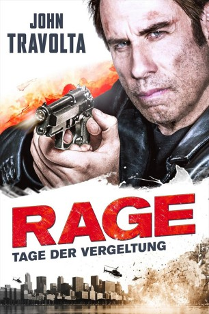

#4286 Rage - Tage der Vergeltung
Alternativ: I Am Wrath
 
 IMDB-Wertung: 5.3 / 10
IMDB-Wertung: 5.3 / 10  Metascore: 0
Metascore: 0 
Vor seinen Augen stechen ein paar verkommene Junkies seine geliebte Frau Vivian einfach ab. Und dann läßt die Polizei den Täter wegen „Verfahrensfehlern“ wieder laufen! Stanley Hill ist außer sich. Der Mann, den alle für einen netten, arbeitslosen Ingenieur halten, erinnert sich an alte Zeiten. Er holt die Knarren aus ihrem Versteck und ruft seinen Kumpel Dennis an. Zusammen haben die beiden früher für ihr Vaterland die Drecksarbeit gemacht und sie sind immer noch verdammt gut in Form. Wie ein Unwetter kommen die Männer über die Kriminellen der Stadt. Dabei ziehen sie nicht nur eine Blutspur durch die Unterwelt, sondern stören auch sehr viel höhere Kreise auf. Langsam dämmert es Stanley, warum seine Frau wirklich sterben musste …
Jahr: 2016
Dauer: 90 Minuten
FSK:
Land: USA Studio: Saban FilmsTonspuren: DD5.1 - ,
Untertitel: Deutsch,
Auflösung: 1080p (1920x800) Größe: 6963 MB
Genre: Action, Krimi, Drama, Thriller
Regisseur: Chuck Russell
Drehbuch: Michael Powell
Soundtrack:
Darsteller:
 John Travolta als Stanley
John Travolta als Stanley Christopher Meloni als Dennis
Christopher Meloni als Dennis- Amanda Schull als Abbie
 Sam Trammell als Det. Gibson
Sam Trammell als Det. Gibson Patrick St. Esprit als Governor Merserve
Patrick St. Esprit als Governor Merserve Rebecca De Mornay als Vivian
Rebecca De Mornay als Vivian- Asante Jones als Det. Walker
 Paul Sloan als Lemi K
Paul Sloan als Lemi K Luis Da Silva Jr. als Charley
Luis Da Silva Jr. als Charley- Jordan Whalen als Mike
- Jayden Blake Cochran als Jimmy
 Robert Forte Shannon III als Nathan
Robert Forte Shannon III als Nathan James Logan als Lars
James Logan als Lars Doris Morgado als Rosa
Doris Morgado als Rosa- Elizabeth Irene als Assistant
- Llysa Rie Iesaka als Katya
- Robert Oppel als Meth Head
- Derrick Gilliam als Tracksuit
 Melissa Bolona als News Reporter #1
Melissa Bolona als News Reporter #1 Steve Kim als Bodyguard
Steve Kim als Bodyguard- Jeff Bairstow als Doctor
 Jeffrey Grover als Lawyer
Jeffrey Grover als Lawyer- Adam Hicks als Police Officer
 Madeleine Woolner als News Reporter #2
Madeleine Woolner als News Reporter #2- Spencer Jay Kim als Bartender
- Karly Ratzenberger als Bar Patron #2
- Chester E. Tripp III als Mechanic
- Rex Alba als Korean Gangster , uncredited
- Xavier Declie als (uncredited
- Alex Donnolo als Thug , uncredited
- Kim Evans als Bar Patron , uncredited
- Gina Ferraro als Party Goer , uncredited
 Rod Fielder als Attorney , uncredited
Rod Fielder als Attorney , uncredited- Robert Gerding als Church Goer , uncredited
- Jim Gloyd als Night Club Patron , uncredited
- Dennis Craig Hensley als Detective , uncredited
- Cora Higgins als Aunt Cora , uncredited
- David Hutchison als Crew #1 , uncredited
- Megan Hutton als Go Go Dancer , uncredited
- Peter Jang als Crew 2 , uncredited
- Matthew Jolly als Bar Patron , uncredited
- Misty M. Jump als Airport Patron , uncredited
- Pamela Mann als Family Mourner , uncredited
- Kenny Parks Jr. als Thug , uncredited
- Ellen Pepper als Extra Governors Scene , uncredited
- Jettzen Shea als Jimmy, Double , uncredited
- Michael Urriquia als Club Bouncer , uncredited
- Peggy Warner als Night Club Guest , uncredited
 William Willet als Coroner , uncredited
William Willet als Coroner , uncredited- Angie Willmott als Governor Supporter , uncredited
Datei: X:\2016(N-Z)\Rage - Tage der Vergeltung (2016, FSK, 1920x800).mkv seit 31.08.2016
Festplatte: HD 2016(A-Z)
 Es gibt insgesamt 182 Filme in der Gruppe '2016(N-Z)'
Es gibt insgesamt 182 Filme in der Gruppe '2016(N-Z)'